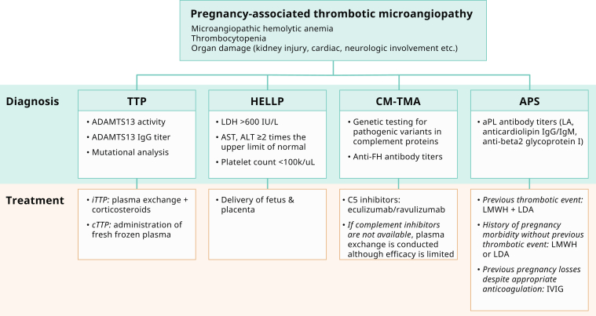
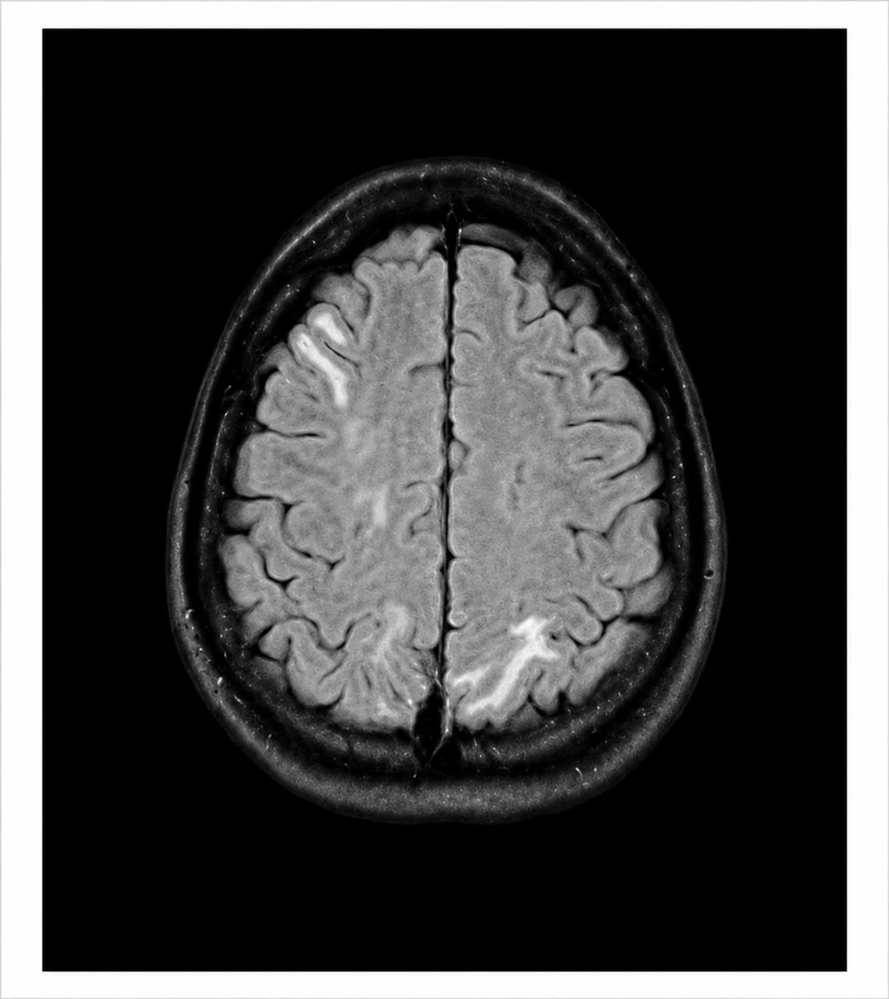
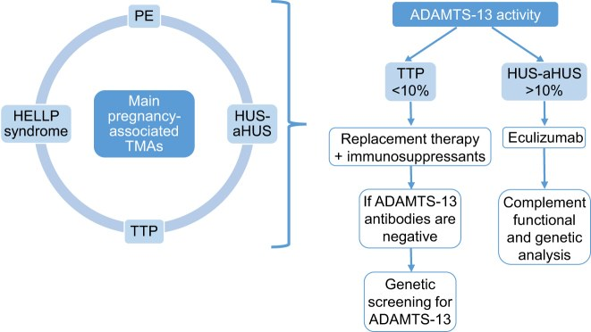

1959 — Tán huyết vi mạch sau sinh: phân biệt HELLP – aHUS – TTP (và vì sao "aHUS" bị chẩn đoán quá tay)
Tags: pattern:tan-huyet-vi-mach pattern:giam-tieu-cau pattern:suy-than-cap pattern:phu-nao pattern:hoai-tu-gan vung:tu-cung-phan-phu vung:than vung:gan vung:nao protocol:MRI-so-nao protocol:CT-bung-can-quang protocol:CEUS protocol:xet-nghiem-ADAMTS13 score:PLASMIC score:KDIGO
Mức chắc chắn (certainty): tổng hợp y văn (literature synthesis) — ghép tổng quan TMA trong thai kỳ (Kidney Int Rep 2024, PMC11328568, CC BY 4.0), thuật toán ADAMTS13 của labo (Adv Lab Med 2024, PMC11381941, CC BY 4.0), đoàn hệ 40 ca aHUS sau sinh, 25 ca có băng huyết (Kidney Int Rep 2024, PMC11101778, CC BY 4.0), hội chẩn đa chuyên khoa 76 ca tại Pháp (Kidney Int Rep 2026, PMC13400224, CC BY-NC-ND 4.0), nghiên cứu PRES trong sản giật 140 thai phụ (Cureus 2026, PMC13330732, CC BY 4.0) và ca PRES sau băng huyết nặng có ảnh MRI (Cureus 2026, PMC13555745, CC BY 4.0). Không có ca do nhóm tự chụp. Số nào nguồn không nêu ghi "chưa rõ".
Bối cảnh thực hành: sản phụ sinh xong 2–5 ngày, thiểu niệu, creatinin tăng, tiểu cầu 60 × 10⁹/L, LDH 1.500 U/L, huyết áp 165/105 mmHg, nhìn mờ và co giật. Câu hỏi không phải "có TMA không" mà là "TMA thể nào" — vì HELLP chữa bằng sinh thai, TTP chữa bằng thay huyết tương (PEX), aHUS chữa bằng ức chế bổ thể (eculizumab). Ba con số định hướng: ADAMTS13 < 10% = TTP (trước khi có PEX, sống sót chỉ 10%); creatinin ≥ 1,9 mg/dL + LDH ≥ 600 U/L sau sinh: độ đặc hiệu 100%, độ nhạy 97% cho CM-TMA, gặp ở 91% aHUS và 0% HELLP; và trong 76 ca hội chẩn thật, không ca nào là aHUS — HELLP/endotheliosis mới là chẩn đoán chính.
1. Tổng quan bệnh học – cơ chế hình ảnh
1.1 TMA là gì: ba dấu hiệu bắt buộc + định nghĩa định lượng
- TMA (thrombotic microangiopathy) = thiếu máu tán huyết vi mạch + giảm tiểu cầu tiêu thụ + tổn thương cơ quan đích do huyết khối vi mạch. Định nghĩa labo dùng trong tổng quan (PMC11328568): Hb < 10 g/dL**, **LDH > 1,5 × giới hạn trên, haptoglobin không đo được, Coombs trực tiếp âm, schistocyte trên phết máu.
- Bốn thể chính trong thai kỳ: TTP (thiếu ADAMTS13), HELLP/tiền sản giật nặng (PE-SF), CM-TMA/aHUS (bổ thể), APS-TMA (kháng thể kháng phospholipid).
- TẠI SAO mang thai là yếu tố khởi phát: VWF tăng ngay từ tam cá nguyệt 1 và duy trì cao tới 6 tuần sau sinh → tiêu thụ ADAMTS13, làm lộ bệnh TTP bẩm sinh vốn im lặng; đồng thời bổ thể hoạt hóa để dọn mảnh rau, mảnh gai rau vào tuần hoàn mẹ gây viêm nội mạc, và băng huyết/DIC làm nặng thêm. Vì vậy cửa sổ nguy hiểm kéo dài 6 tuần sau sinh, không chỉ vài ngày.
- Tỉ lệ tử vong: chẩn đoán TMA khi mang thai làm nguy cơ tử vong tăng ~4,5 lần so với thai phụ không TMA (PMC11328568).
1.2 Vì sao mỗi thể lại "đánh" một cơ quan khác nhau (cơ chế hình ảnh)
- TTP: thiếu ADAMTS13 → multimer VWF siêu lớn không bị cắt → tiểu cầu kết dính thành huyết khối vi mạch ở não và mọi cơ quan, ít tổn thương thận so với aHUS. Hình ảnh: nhồi máu vi mạch rải rác, thường CT sọ bình thường; MRI có thể thấy ổ nhồi máu nhỏ ở vỏ/đồi thị — khác hẳn kiểu phù lan toả của PRES.
- HELLP: tổn thương nội mạc do sFlt-1/PlGF mất cân bằng và hoạt hóa bổ thể → tan máu trong lòng mạch, hoại tử tế bào gan quanh xoang, giảm tiểu cầu. Hình ảnh: gan to, phù quanh gan, nhồi máu gan hình địa lý, và biến chứng chết người là tụ máu dưới bao gan (subcapsular hematoma) — trên CT là ổ dịch/tụ máu liềm dưới bao, đậm độ 35–70 HU, có thể vỡ gây chảy máu ổ bụng.
- CM-TMA/aHUS: bổ thể hoạt hóa không kiểm soát → huyết khối tiểu động mạch thận và cầu thận → vỏ thận thiếu máu. Hình ảnh: vỏ thận không ngấm thuốc, tuỷ còn ngấm ("reverse rim sign") trên CT/CEUS — chi tiết và ngưỡng ở bài 1957; đây là hình ảnh quyết định vì aHUS là thể hay để lại suy thận nhất.
- PRES (biến chứng thần kinh của HELLP/sản giật): huyết áp vượt tự điều hòa não → phù mạch (vasogenic edema) ở chất trắng dưới vỏ và vỏ, ưu thế vùng chẩm–đỉnh. TẠI SAO MRI "sáng" mà không "tối" trên DWI: nước ở khoảng kẽ (ngoại bào) làm T2/FLAIR tăng tín hiệu nhưng không hạn chế khuếch tán → ADC tăng, phân biệt với nhồi máu (ADC giảm). Đây là lý do PRES hồi phục sau vài ngày–vài tuần nếu kiểm soát huyết áp.
1.3 Bộ số phân biệt nằm lòng (quan trọng hơn mọi mô tả định tính)
| Thông số | HELLP | CM-TMA (aHUS) | TTP |
|---|---|---|---|
| Tiểu cầu | < 100 × 10⁹/L (tiêu chuẩn Tennessee) | giảm vừa–nặng | giảm, thường nặng |
| LDH | > 600 U/L | ≥ 1.832 U/L ở 77% (HELLP: 0%) | tăng do tan máu |
| AST/ALT | ≥ 2 × giới hạn trên | thường tăng nhẹ | thường bình thường |
| Creatinin | tăng ở 10%, trong đó 40% cần lọc máu | ≥ 1,9 mg/dL ở 98% (HELLP: 2%) | thường < 1,9 mg/dL |
| ADAMTS13 | bình thường | ≥ 10% (thường > 20%) | < 10% |
| Bổ thể | có hoạt hóa, 5–45% có biến thể | 60–70% có biến thể dị hợp (FH/FI/MCP) | bình thường |
| Điều trị | sinh thai | eculizumab/ravulizumab | PEX + corticoid |
| Thời điểm | > 2/3 ở tam cá nguyệt 3 + ngay sau sinh | thường sau sinh | bất kỳ lúc nào, nặng dần sau sinh |
- Bộ đôi quyết định (PMC11328568): creatinin ≥ 1,9 mg/dL + LDH ≥ 600 U/L sau sinh → CM-TMA: độ nhạy 97%, độ đặc hiệu 100%, gặp 91% aHUS so với 0% HELLP. Đây là công cụ rẻ, có trong 10 phút, dùng trước khi có ADAMTS13.
- HELLP: 0,5–1% các thai kỳ; tử vong mẹ 1,1%; tử vong chu sinh 7–34%; thể bệnh bắt đầu giảm sau sinh 3–4 ngày (PMC11328568).
- TTP: ADAMTS13 < 10%; anti-ADAMTS13 IgG dương ở ~75% thể mắc phải; trước PEX chỉ 10% sống sót (PMC11328568).
- Thực tế đa chuyên khoa (PMC13400224): 76 ca được hội chẩn cấp trong 24 giờ: tiền sản giật 47%, băng huyết sau sinh 40%, AKI 62%, hoại tử vỏ thận 12%, TTP 17%, aHUS 0%; hội chẩn đổi cách xử trí ở 26% ca, thường là giảm can thiệp.
- Băng huyết có làm "aHUS" không? (PMC11101778): trong 40 ca chẩn đoán aHUS sau sinh, 25 ca có băng huyết; biến thể bổ thể gây bệnh 20% ở nhóm KHÔNG băng huyết và 0% ở nhóm CÓ băng huyết → nhiều ca "aHUS sau băng huyết" thực chất là TMA do biến cố sản khoa, không phải bệnh bổ thể.
- PRES (PMC13330732): gặp ở 62/140 (44,3%) sản giật; huyết áp tâm thu ≥ 170 mmHg: aOR 3,21; ≥ 3 cơn co giật: aOR 3,68.
2. Mẫu hình + chẩn đoán phân biệt theo thời điểm và cơ quan (gamut)
- Theo thời điểm so với sinh (mốc ngày 0):
- Trước sinh / ngay lúc sinh: HELLP, tiền sản giật nặng, AFE (bài 1958), DIC do nhau bong non.
- 24–72 giờ sau sinh: HELLP thể khởi phát sau sinh, băng huyết – DIC, PRES.
- 3 ngày – 6 tuần sau sinh: CM-TMA/aHUS, TTP (đỉnh sau sinh vì VWF còn cao), APS-TMA.
- Sau 6 tuần: ít nghĩ TMA sản khoa; chuyển sang bệnh thận nguyên phát, lupus, xơ cứng bì.
- Theo cơ quan bị "đánh" mạnh nhất: gan + tiểu cầu → HELLP; thận → CM-TMA/RCN, APS-TMA; não → TTP, PRES; phổi → phù phổi (HELLP, quá tải, AFE); da/đầu chi → hoại thư chi (DIC, APS nặng).
- Gợi nhớ bằng "3 tầng" của một ca TMA sản khoa: (1) tầng sản khoa (nhau, băng huyết, nhiễm khuẩn ối); (2) tầng huyết học (TTP, APS, DIC); (3) tầng bổ thể (CM-TMA). Bỏ tầng nào cũng dẫn tới điều trị sai.
3. Bảng so sánh phân biệt (ma trận đối chiếu)
| Thực thể | Hình ảnh / labo điển hình | Chốt vào (rule-in) | Chốt loại (rule-out) | Gợi ý xác nhận |
|---|---|---|---|---|
| HELLP | Gan to, tụ máu dưới bao, nhồi máu gan; LDH > 600, AST/ALT ≥ 2 × ULN, tiểu cầu < 100 × 10⁹/L | Bộ ba labo + huyết áp cao/protein niệu + giảm sau sinh 3–4 ngày | ADAMTS13 < 10% → TTP; creatinin ≥ 1,9 + LDH ≥ 600 → CM-TMA | Labo 6 giờ/lần, SA/CT gan khi đau hạ sườn phải |
| CM-TMA (aHUS) | Vỏ thận không ngấm, tuỷ ngấm; creatinin ≥ 1,9 mg/dL, LDH ≥ 1.832 U/L; MRI não có thể PRES | Creatinin ≥ 1,9 + LDH ≥ 600 sau sinh (Se 97%, Sp 100%); ADAMTS13 ≥ 10% | Đáp ứng và hồi phục sau sinh, LDH < 600 → HELLP | ADAMTS13, bổ thể (C3, C4, sC5b-9), panel gen 15 gen, sinh thiết thận |
| TTP | CT sọ thường bình thường, MRI có ổ nhồi máu nhỏ; schistocyte nhiều, tiểu cầu rất thấp, thần kinh dao động | ADAMTS13 < 10%** (± anti-ADAMTS13 IgG); **PLASMIC > 5 | Không có thiếu ADAMTS13 → không phải TTP dù có TMA | ADAMTS13 trước PEX, anti-ADAMTS13 IgG |
| APS-TMA | Thận khu trú, huyết khối động–tĩnh mạch; có thể KHÔNG có schistocyte | aPL dương (LA, aCL, anti-β2GPI) + huyết khối/tổn thương thận | aPL âm → loại | aPL 2 lần cách 12 tuần, CT/MRI mạch |
| DIC / nhiễm khuẩn huyết | PT/aPTT kéo dài, fibrinogen giảm, D-dimer rất cao, hạ huyết áp, ổ nhiễm | Rối loạn đông máu tiêu thụ + cấy dương + ổ nhiễm | Fibrinogen bình thường, ADAMTS13 < 10% → TTP | Cấy máu, ISTH DIC score, CT ổ nhiễm (bài 1926) |
| TMA do băng huyết | Thiếu máu nặng, tổn thương thận ± RCN, hồi phục một phần | Băng huyết lớn + creatinin tăng + LDH tăng, ADAMTS13 ≥ 10% | Biến thể bổ thể gây bệnh + tái phát ngoài thai kỳ → CM-TMA thật | Theo dõi 4–8 tuần, gen bổ thể |

Bốn nhánh của TMA sản khoa: TTP (ADAMTS13 < 10%, PEX + corticoid), **HELLP** (LDH > 600, AST/ALT ≥ 2 × ULN, tiểu cầu < 100 k/µL → sinh thai), CM-TMA (gen bổ thể, anti-FH → eculizumab/ravulizumab), APS (aPL + kháng đông). Nguồn: Kidney Int Rep 2024 (PMC11328568), CC BY 4.0 — nguyên bản, không crop.4. Protocol xét nghiệm – hình ảnh + hệ điểm chuẩn hóa
4.1 Thứ tự xét nghiệm (làm sai thứ tự = mất chẩn đoán TTP)
- Ngay khi nghi TMA: CTM + phết máu ngoại vi (schistocyte), LDH, haptoglobin, bilirubin gián tiếp, Coombs trực tiếp, creatinin, urê, điện giải, AST/ALT, LDH, PT/aPTT/fibrinogen/D-dimer, tổng phân tích nước tiểu + protein/creatinin niệu, cấy máu.
- ADAMTS13 NGAY, TRƯỚC khi truyền huyết tương/thay huyết tương — vì PEX làm ADAMTS13 trở về bình thường giả tạo. Nếu chưa có kết quả mà lâm sàng nặng (thần kinh, tiểu cầu giảm nhanh), bắt đầu PEX ngay, không chờ.
- PLASMIC score: > 5 = nguy cơ cao thiếu ADAMTS13 (điểm này được xây ngoài thai kỳ — dùng để định hướng, không thay ADAMTS13).
- Panel bổ thể (C3, C4, yếu tố H/I, anti-FH, sC5b-9) + panel gen 15 gen (ADAMTS13, C3, CD46, CFB, CFH, CFHR1-5, CFI, DGKE, THBD, MMACHC, PLG) — làm sau khi đã xử trí cấp, không chờ để điều trị.
- aPL (LA, anti-cardiolipin IgG/IgM, anti-β2GPI) — nếu dương, lặp lại sau 12 tuần để chẩn đoán APS thật.
- Theo dõi: LDH + tiểu cầu mỗi 6–12 giờ trong 48 giờ đầu; creatinin/ngày; nước tiểu.
4.2 Hình ảnh: chụp gì, khi nào, và cái gì KHÔNG cần
- MRI sọ (FLAIR + T2 + DWI/ADC + SWI) khi đau đầu dữ dội, nhìn mờ, co giật, rối loạn tri giác: tìm PRES (phù vỏ–dưới vỏ, ADC tăng) và xuất huyết (SWI). Không dùng gadolinium khi suy thận nặng — không cần cho chẩn đoán PRES.
- Siêu âm thận + CEUS là lựa chọn đầu tay khi nghi hoại tử vỏ thận: không độc thận, làm tại giường; CT có cản quang chỉ khi cần và chức năng thận cho phép (ngưỡng eGFR theo từng cơ sở).
- Siêu âm/CT gan khi đau hạ sườn phải, thiếu máu tụt, AST/ALT tăng vọt: tìm tụ máu dưới bao gan (35–70 HU) — biến chứng có thể vỡ, chảy máu ổ bụng.
- X-quang ngực / siêu âm phổi khi khó thở: phù phổi do quá tải hoặc tổn thương nội mạc (bài 1958).
- Không chụp để "tìm nguyên nhân TMA": TMA là chẩn đoán labo; hình ảnh chỉ để đánh giá cơ quan đích và biến chứng.
4.3 Sơ đồ quyết định tại giường
flowchart TD
A[TMA sau sinh: tan huyet + tieu cau giam + ton thuong co quan] --> B[ADAMTS13 truoc khi PEX]
B --> C{ADAMTS13 duoi 10 phan tram}
C -->|Co| D[TTP: PEX + corticoid + caplacizumab]
C -->|Khong| E{Du tieu chuan HELLP}
E -->|Co| F[HELLP: sinh thai + theo doi 3-4 ngay]
E -->|Khong| G{Creatinin tren 1,9 va LDH tren 600}
G -->|Co| H[CM-TMA: eculizumab + vaccine nao mo cau]
G -->|Khong| I{aPL duong tinh}
I -->|Co| J[APS-TMA: khang dong]
I -->|Khong| K[Xem lai DIC, nhiem khuan, TMA do bang huyet]
- Eculizumab: thuốc không qua nhau thai đáng kể (nồng độ thấp trong máu cuống rốn) và không vào sữa — dùng được trong thai kỳ và cho con bú. Bắt buộc vaccine não mô cầu; nếu tiêm vaccine ngay lúc cấp cứu → kháng sinh dự phòng ≥ 14 ngày. Ravulizumab có thời gian bán thải ~52 ngày (eculizumab ~11 ngày) nhưng qua nhau thai/sữa nhiều hơn do ái lực FcRn cao gấp > 10 lần.
- TTP: PEX + corticoid; caplacizumab đã được dùng ở thai kỳ (báo cáo ca); ADAMTS13 tái tổ hợp 40 IU/kg cho TTP bẩm sinh (thử nghiệm pha 3: 48 bệnh nhân, không có cơn TTP nào khi dự phòng, ADAMTS13 đạt ~100% so với 19% ở nhóm chuẩn).
- HELLP: sinh thai là điều trị duy nhất, thể bệnh giảm trong 3–4 ngày sau sinh.
5. Biến thể bình thường và cạm bẫy
- "aHUS" bị chẩn đoán quá tay: trong 76 ca hội chẩn, 0 ca là aHUS; 40% là băng huyết và 47% tiền sản giật (PMC13400224). Nếu mọi TMA sau sinh đều được gọi aHUS thì nhiều thai phụ nhận eculizumab không cần thiết (đắt, nguy cơ nhiễm não mô cầu) và bỏ qua điều trị sản khoa.
- Băng huyết "giả aHUS": 0% biến thể bổ thể ở nhóm có băng huyết so với 20% ở nhóm không băng huyết — nên không vội kết luận bệnh bổ thể khi có biến cố sản khoa rõ (PMC11101778).
- ADAMTS13 lấy sau PEX = âm tính giả: luôn lấy trước huyết tương; nếu đã truyền, ghi rõ trong phiếu để không loại trừ TTP sai.
- APS-TMA có thể KHÔNG có schistocyte và giới hạn ở thận (PMC11328568) → đừng loại APS chỉ vì phết máu "sạch".
- Truyền tiểu cầu ở TTP: có báo cáo TMA/AKI nặng lên sau truyền tiểu cầu không tương hợp ở sản phụ (Am J Kidney Dis 2021, PMC7973159) → chỉ truyền khi chảy máu đe dọa tính mạng hoặc trước thủ thuật không hoãn được.
- PRES không phải nhồi máu: ADC tăng mới là PRES; ADC giảm là nhồi máu → tiên lượng và xử trí khác (huyết khối, không chỉ hạ áp).
- HELLP có thể khởi phát sau sinh và không có tăng huyết áp rõ — đừng đợi đủ "bộ ba" mới nghĩ đến.
- Hình ảnh thận bình thường trên siêu âm B-mode không loại trừ RCN: B-mode chỉ thấy viền giảm âm ở 33,3% ca; CEUS thấy 12/12 (bài 1957).
6. Tự lượng giá — Blind Quiz
Ca 1 — Sản phụ 16 tuổi, 35,4 tuần, đau đầu dữ dội, phù chi dưới, huyết áp rất cao; mổ lấy thai cấp, sau mổ co giật toàn thể. Nhìn ảnh MRI dưới đây.

- Câu hỏi: (1) Tổn thương ở đâu, tăng tín hiệu theo kiểu gì? (2) Vì sao gọi là "phù mạch" chứ không phải nhồi máu — cần chuỗi xung nào để chứng minh? (3) Ba việc phải làm ngay?
Bấm để hiện đáp án
- Dấu hiệu: tăng tín hiệu FLAIR đối xứng/không đối xứng ở vỏ–dưới vỏ, ưu thế đỉnh–chẩm hai bên, không có khối choán chỗ.
- Cơ chế: phù mạch do tăng huyết áp vượt tự điều hòa → nước ở khoảng kẽ → ADC tăng, DWI không hạn chế (khác nhồi máu: ADC giảm).
- Việc phải làm: hạ áp có kiểm soát, magnesium sulfate dự phòng/tái phát co giật, theo dõi thần kinh + MRI lặp lại; đồng thời loại TMA (CTM, LDH, creatinin, ADAMTS13) vì cùng bệnh cảnh.
- Diễn biến thật: hồi phục thần kinh hoàn toàn, không di chứng khu trú.
- Nguồn: Cureus 2026 (PMC13555745), CC BY 4.0.
Ca 2 — Sản phụ sinh thường 3 ngày trước, băng huyết 1.500 mL đã bù dịch; nay thiểu niệu, creatinin 3,2 mg/dL, LDH 1.900 U/L, tiểu cầu 70 × 10⁹/L, ADAMTS13 45%. Bước tiếp theo theo sơ đồ nào?
- Câu hỏi: thể TMA nào? Vì sao không phải TTP? Có nên dùng eculizumab ngay không?
Bấm để hiện đáp án
- Thể: TMA sau băng huyết, hình thái CM-TMA theo ngưỡng creatinin ≥ 1,9 + LDH ≥ 600 (Se 97%, Sp 100%) nhưng bối cảnh băng huyết làm bệnh bổ thể thật ít khả năng (0% biến thể ở nhóm băng huyết).
- Không phải TTP: ADAMTS13 45% ≥ 10% → loại TTP; không cần PEX.
- Eculizumab: cân nhắc ngắn hạn nếu không hồi phục/hội chẩn đồng ý (loạt 40 ca: 4/5 ca RCN sau băng huyết được ức chế bổ thể, hồi phục một phần), nhưng không dùng tràn lan — 76 ca hội chẩn có 0 ca aHUS.
- Nguồn: Kidney Int Rep 2024 (PMC11328568, PMC11101778), Kidney Int Rep 2026 (PMC13400224).
Ca 3 — Sản phụ 29 tuổi, sau sinh 10 ngày: lú lẫn từng lúc, tiểu cầu 12 × 10⁹/L, LDH 2.100 U/L, creatinin 0,8 mg/dL, phết máu nhiều schistocyte.

- Câu hỏi: chẩn đoán? Xét nghiệm chốt? Điều trị đầu tay, và vì sao không chờ kết quả?
Bấm để hiện đáp án
- Chẩn đoán: TTP — thiếu máu tán huyết vi mạch + giảm tiểu cầu rất nặng + thần kinh dao động, creatinin bình thường (aHUS thường creatinin cao).
- Chốt: ADAMTS13 < 10%** (± anti-ADAMTS13 IgG); **PLASMIC > 5 hỗ trợ.
- Điều trị: PEX + corticoid ngay; nếu nặng/thất bại → caplacizumab/rituximab. Không chờ ADAMTS13 vì trước PEX chỉ 10% sống sót.
- Sai lầm hay gặp: truyền tiểu cầu "để nâng số" — có thể làm TMA nặng lên.
- Nguồn: Kidney Int Rep 2024 (PMC11328568), Adv Lab Med 2024 (PMC11381941), CC BY 4.0.
Bài liên quan chéo
- 1957 – Hoại tử vỏ thận sau băng huyết — hình ảnh thận của TMA nặng nhất
- 1958 – TACO, TRALI, AFE: phù phổi sau truyền máu ở sản phụ — mặt hô hấp của cùng bệnh cảnh
- 1932 – Truyền máu khối lượng lớn trong băng huyết sau sinh — bù dịch và DIC
- 1926 – Viêm màng ối nhiễm khuẩn — DIC/nhiễm khuẩn huyết sản khoa
- 1948 – Co giật & động kinh sau huyết khối xoang tĩnh mạch não — phân biệt co giật do nguyên nhân mạch máu
Ảnh
- Ba ảnh tải từ Europe PMC/PMC, giấy phép ghi từng file trong
images/CREDITS.md. - Không dùng ảnh paywall/AuntMinnie; ảnh MRI FLAIR là nguyên bản (CC BY 4.0).
Không dùng để chẩn đoán độc lập khi chưa có người hướng dẫn.